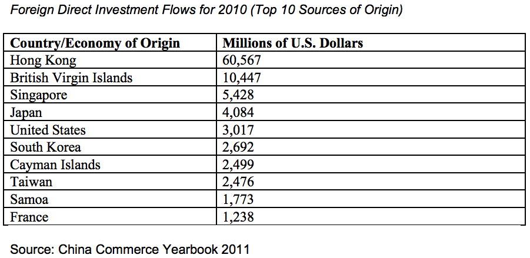
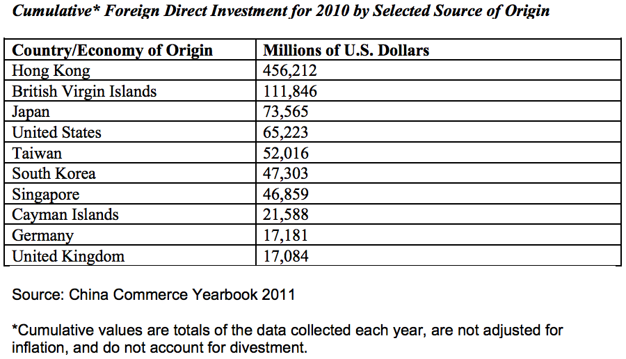
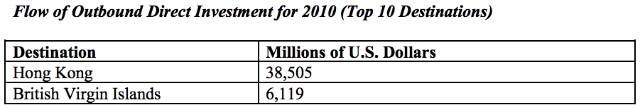
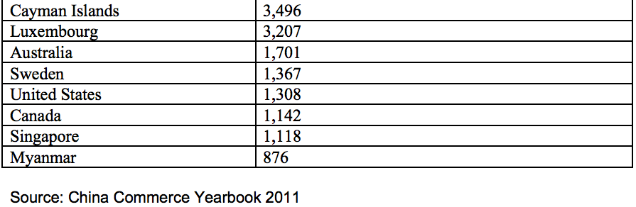
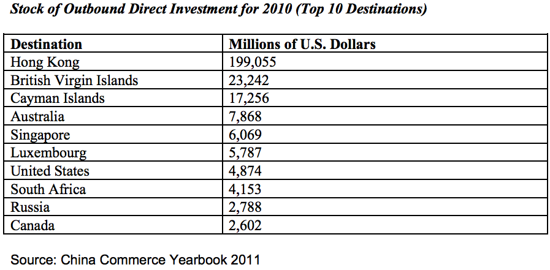

Data Limitations
Investment from and to some economies, including but not limited to the British Virgin Islands, the Cayman Islands, Hong Kong, and Macau, may mask the ultimate source/destination of the investment. Some analysts have noted that investment from and to Taiwan may be underreported.
Chinese FDI data do not include much of the high dollar-value minority equity stakes that American financial services firms have taken in major Chinese lenders. In addition, China does not classify reinvested locally-generated profits as new investment.
FDI as a Percentage of Gross Domestic Product
According to the United Nations Conference on Trade and Development, China's FDI stock equaled 10 percent of its gross domestic product (GDP) in 2010; China's FDI inflows equaled 2 percent of GDP.




